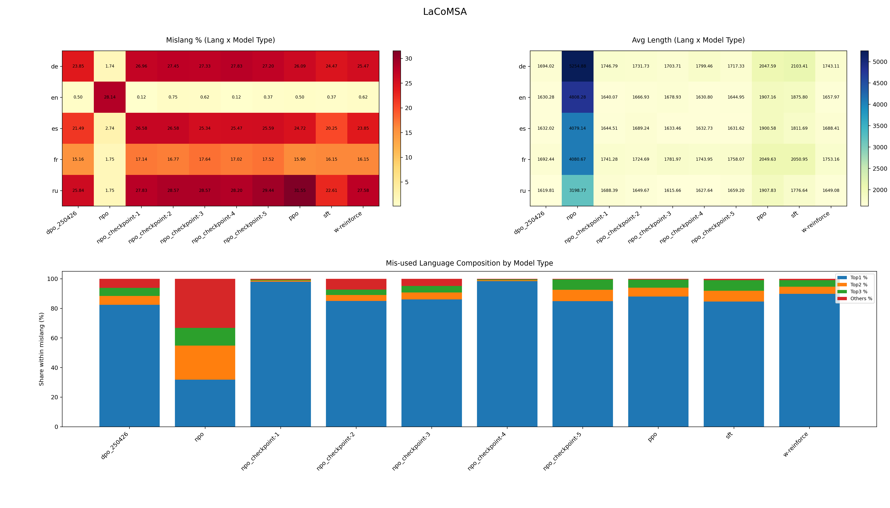
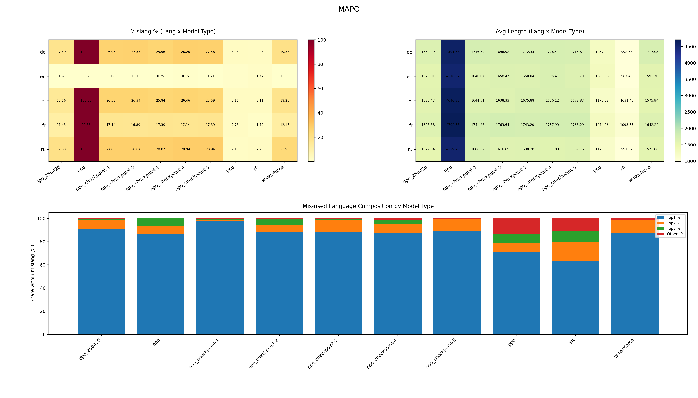
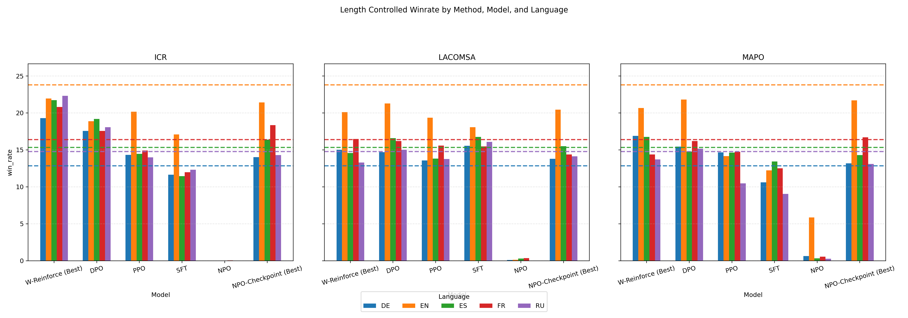

../analysis/figures/overview_with_composition_lacomsa.png

../analysis/figures/overview_with_composition_mapo.png

../analysis/figures/winrate_icr_lacomsa_mapo_best_filtered.png
| script_path | category | primary_inputs | primary_outputs | core_metric | notes |
|---|---|---|---|---|---|
| /home/gangstat/NeMA_result/scripts/analysis/mislang.py | analysis | /home/gangstat/NeMA_result/_pairs/*.jsonl | /home/gangstat/NeMA_result/analysis/mislang_data.csv | mislang_pct, avg_response_length | Line-level JSONL analysis on rejected output text |
| /home/gangstat/NeMA_result/scripts/analysis/mislang_base.py | analysis | /home/gangstat/NeMA_result/responses/baseline/*.jsonl | /home/gangstat/NeMA_result/analysis/mislang_model_baseline.csv | mislang_pct, avg_length | Baseline output analysis parsed from filename metadata |
| /home/gangstat/NeMA_result/scripts/analysis/mislang_model.py | analysis | /home/gangstat/NeMA_result/responses/<method>/*/model_outputs.json | /home/gangstat/NeMA_result/analysis/mislang_model_<method>.csv | mislang_pct, avg_length | Folder-based model analysis; DPO filtered to dpo_250426 only |
| /home/gangstat/NeMA_result/scripts/analysis/export_confusion_matrix.py | analysis | /home/gangstat/NeMA_result/_pairs/*.jsonl | /home/gangstat/NeMA_result/analysis/cm_<dataset>.csv | expected_vs_detected_lang_pct | Confusion matrix export for expected langs (default es, ru) |
| /home/gangstat/NeMA_result/scripts/visualization/plot_mislang_models.py | visualization | /home/gangstat/NeMA_result/analysis/mislang_model_*.csv | /home/gangstat/NeMA_result/analysis/figures/mislang_models_overview.png | mislang_pct, avg_length, composition(top1-top3-others) | Heatmaps + stacked composition chart |
| /home/gangstat/NeMA_result/scripts/visualization/plot_confusion_heatmaps.py | visualization | /home/gangstat/NeMA_result/analysis/cm_*.csv | /home/gangstat/NeMA_result/analysis/figures/*heatmap*.png | confusion_pct | Single and combined confusion heatmaps |
| /home/gangstat/NeMA_result/scripts/visualization/plot_confusion_with_summary.py | visualization | /home/gangstat/NeMA_result/analysis/cm_*.csv; /home/gangstat/NeMA_result/analysis/mislang_data.csv | /home/gangstat/NeMA_result/analysis/figures/confusion_with_summary.png | confusion_pct + mislang_pct + avg_response_length | Top panel: heatmaps, lower panels: summary bars |
| /home/gangstat/NeMA_result/scripts/visualization/plot_length_controlled_winrate.py | visualization | /home/gangstat/NeMA_result/results/**/*.csv | /home/gangstat/NeMA_result/analysis/figures/winrate_icr_lacomsa_mapo_best_filtered.png | length_controlled_winrate (fallback win_rate) | w-reinforce best(general/clone), npo + best checkpoint |
| /home/gangstat/NeMA_result/scripts/visualization/plot_lc_winrate_npo.py | visualization | /home/gangstat/NeMA_result/results/**/*.csv | /home/gangstat/NeMA_result/analysis/figures/lc_winrate_npo_checkpoints.png | length_controlled_winrate (fallback win_rate) | NPO-only: all checkpoints + NPO general at end |
| /home/gangstat/NeMA_result/scripts/visualization/stack_overview_images.py | visualization | /home/gangstat/NeMA_result/analysis/figures/overview_*.png | /home/gangstat/NeMA_result/analysis/figures/overview_stacked_vertical.png | N/A | Utility to stack multiple overview figures vertically |
| artifact_path | type | producer_script | status | description |
|---|---|---|---|---|
| /home/gangstat/NeMA_result/analysis/mislang_data.csv | csv | /home/gangstat/NeMA_result/scripts/analysis/mislang.py | active | Dataset-level mislang summary |
| /home/gangstat/NeMA_result/analysis/mislang_model_baseline.csv | csv | /home/gangstat/NeMA_result/scripts/analysis/mislang_base.py | active | Baseline model mislang summary |
| /home/gangstat/NeMA_result/analysis/mislang_model_icr.csv | csv | /home/gangstat/NeMA_result/scripts/analysis/mislang_model.py | active | ICR model mislang summary |
| /home/gangstat/NeMA_result/analysis/mislang_model_lacomsa.csv | csv | /home/gangstat/NeMA_result/scripts/analysis/mislang_model.py | active | LACOMSA model mislang summary |
| /home/gangstat/NeMA_result/analysis/mislang_model_mapo.csv | csv | /home/gangstat/NeMA_result/scripts/analysis/mislang_model.py | active | MAPO model mislang summary |
| /home/gangstat/NeMA_result/analysis/cm_icr.csv | csv | /home/gangstat/NeMA_result/scripts/analysis/export_confusion_matrix.py | active | Confusion matrix for ICR training data |
| /home/gangstat/NeMA_result/analysis/cm_lacomsa.csv | csv | /home/gangstat/NeMA_result/scripts/analysis/export_confusion_matrix.py | active | Confusion matrix for LACOMSA training data |
| /home/gangstat/NeMA_result/analysis/cm_mapo.csv | csv | /home/gangstat/NeMA_result/scripts/analysis/export_confusion_matrix.py | active | Confusion matrix for MAPO training data |
| /home/gangstat/NeMA_result/analysis/figures/overview_icr.png | png | /home/gangstat/NeMA_result/scripts/visualization/plot_confusion_with_summary.py | active | ICR overview panel |
| /home/gangstat/NeMA_result/analysis/figures/overview_lacomsa.png | png | /home/gangstat/NeMA_result/scripts/visualization/plot_confusion_with_summary.py | active | LACOMSA overview panel |
| /home/gangstat/NeMA_result/analysis/figures/overview_mapo.png | png | /home/gangstat/NeMA_result/scripts/visualization/plot_confusion_with_summary.py | active | MAPO overview panel |
| /home/gangstat/NeMA_result/analysis/figures/overview_stacked_vertical.png | png | /home/gangstat/NeMA_result/scripts/visualization/stack_overview_images.py | active | Stacked overview image for quick review |
| /home/gangstat/NeMA_result/analysis/figures/winrate_icr_lacomsa_mapo_best_filtered.png | png | /home/gangstat/NeMA_result/scripts/visualization/plot_length_controlled_winrate.py | active | Best-filtered LC winrate figure |
| /home/gangstat/NeMA_result/analysis/figures/lc_winrate_npo_checkpoints.png | png | /home/gangstat/NeMA_result/scripts/visualization/plot_lc_winrate_npo.py | active | NPO checkpoints plus NPO general |
| metric_name | definition | unit | source_columns | used_by |
|---|---|---|---|---|
| mislang_pct | Percent of samples where detected language differs from expected language | percent | mismatch_count,total_samples | mislang.py, mislang_base.py, mislang_model.py, plot_mislang_models.py, plot_confusion_with_summary.py |
| avg_response_length | Average character length of analyzed model outputs | characters | total_output_characters,total_samples | mislang.py, plot_confusion_with_summary.py |
| avg_length | Average character length of analyzed model outputs (model-level CSV variant) | characters | output_total_length,total_samples | mislang_base.py, mislang_model.py, plot_mislang_models.py |
| length_controlled_winrate | Win rate after length normalization/control | percent | length_controlled_winrate | plot_length_controlled_winrate.py, plot_lc_winrate_npo.py |
| win_rate | Raw win rate without length control | percent | win_rate | fallback in plot_length_controlled_winrate.py and plot_lc_winrate_npo.py |
| confusion_pct | Percentage of detected language within an expected-language row in confusion matrix | percent | cm_<dataset>.csv cell values | plot_confusion_heatmaps.py, plot_confusion_with_summary.py |
| top1_pct | Share of most frequent detected wrong language among mismatches | percent | top1_count,mislang_count | mislang.py, mislang_base.py, mislang_model.py, plot_mislang_models.py |
| top2_pct | Share of second most frequent detected wrong language among mismatches | percent | top2_count,mislang_count | mislang.py, mislang_base.py, mislang_model.py, plot_mislang_models.py |
| top3_pct | Share of third most frequent detected wrong language among mismatches | percent | top3_count,mislang_count | mislang.py, mislang_base.py, mislang_model.py, plot_mislang_models.py |
| others_pct | Share of all remaining detected wrong languages outside top3 | percent | others_count,mislang_count | mislang_base.py, mislang_model.py, plot_mislang_models.py |
| folder | lang_prefix | model_type | version | total_samples | mislang_count | mislang_pct | avg_length | top1_lang | top1_count | top1_pct | top2_lang | top2_count | top2_pct | top3_lang | top3_count | top3_pct | others_count | others_pct |
|---|---|---|---|---|---|---|---|---|---|---|---|---|---|---|---|---|---|---|
| de.json.prediction.with_Llama-3-Base-8B-SFT-DPO.to_de.jsonl | de | Llama-3-Base-8B-SFT-DPO | baseline | 805 | 222 | 27.58 | 1710.02 | en | 217 | 97.75 | fr | 2 | 0.90 | zh | 2 | 0.90 | 1 | 0.45 |
| en.json.prediction.with_Llama-3-Base-8B-SFT-DPO.to_en.jsonl | en | Llama-3-Base-8B-SFT-DPO | baseline | 805 | 5 | 0.62 | 1760.10 | de | 1 | 20.00 | is | 1 | 20.00 | he | 1 | 20.00 | 2 | 40.00 |
| es.json.prediction.with_Llama-3-Base-8B-SFT-DPO.to_es.jsonl | es | Llama-3-Base-8B-SFT-DPO | baseline | 805 | 208 | 25.84 | 1672.90 | en | 202 | 97.12 | fr | 3 | 1.44 | de | 1 | 0.48 | 2 | 0.96 |
| fr.json.prediction.with_Llama-3-Base-8B-SFT-DPO.to_fr.jsonl | fr | Llama-3-Base-8B-SFT-DPO | baseline | 805 | 142 | 17.64 | 1713.53 | en | 139 | 97.89 | es | 2 | 1.41 | de | 1 | 0.70 | 0 | 0.00 |
| ru.json.prediction.with_Llama-3-Base-8B-SFT-DPO.to_ru.jsonl | ru | Llama-3-Base-8B-SFT-DPO | baseline | 805 | 230 | 28.57 | 1636.20 | en | 223 | 96.96 | fr | 4 | 1.74 | es | 1 | 0.43 | 2 | 0.87 |
| folder | lang_prefix | model_type | version | total_samples | mislang_count | mislang_pct | avg_length | top1_lang | top1_count | top1_pct | top2_lang | top2_count | top2_pct | top3_lang | top3_count | top3_pct | others_count | others_pct |
|---|---|---|---|---|---|---|---|---|---|---|---|---|---|---|---|---|---|---|
| de-results-icr_enesru_llama3_8b_dpo_250426_v0 | de | dpo_250426 | v0 | 805 | 15 | 1.86 | 1530.38 | en | 10 | 66.67 | it | 1 | 6.67 | es | 1 | 6.67 | 3 | 20.00 |
| de-results-icr_enesru_llama3_8b_npo_150426_v0 | de | npo_150426 | v0 | 804 | 26 | 3.23 | 8176.24 | ru | 11 | 42.31 | es | 2 | 7.69 | fr | 2 | 7.69 | 11 | 42.31 |
| de-results-icr_enesru_llama3_8b_npo_checkpoint-1_v0 | de | npo_checkpoint-1 | v0 | 805 | 205 | 25.47 | 1688.48 | en | 200 | 97.56 | fi | 1 | 0.49 | es | 1 | 0.49 | 3 | 1.46 |
| de-results-icr_enesru_llama3_8b_npo_checkpoint-2_v0 | de | npo_checkpoint-2 | v0 | 805 | 222 | 27.58 | 1709.19 | en | 215 | 96.85 | fr | 3 | 1.35 | zh | 2 | 0.90 | 2 | 0.90 |
| de-results-icr_enesru_llama3_8b_npo_checkpoint-3_v0 | de | npo_checkpoint-3 | v0 | 805 | 212 | 26.34 | 1731.73 | en | 207 | 97.64 | fr | 2 | 0.94 | zh | 1 | 0.47 | 2 | 0.94 |
| de-results-icr_enesru_llama3_8b_npo_checkpoint-4_v0 | de | npo_checkpoint-4 | v0 | 805 | 214 | 26.58 | 1727.46 | en | 207 | 96.73 | fr | 3 | 1.40 | sr | 1 | 0.47 | 3 | 1.40 |
| de-results-icr_enesru_llama3_8b_npo_checkpoint-5_v0 | de | npo_checkpoint-5 | v0 | 805 | 214 | 26.58 | 1721.64 | en | 208 | 97.20 | fr | 2 | 0.93 | fi | 1 | 0.47 | 3 | 1.40 |
| de-results-icr_enesru_llama3_8b_ppo_150426_v0 | de | ppo_150426 | v0 | 805 | 135 | 16.77 | 1696.87 | en | 130 | 96.30 | fr | 2 | 1.48 | zh | 1 | 0.74 | 2 | 1.48 |
| de-results-icr_enesru_llama3_8b_sft_150426_v0 | de | sft_150426 | v0 | 805 | 132 | 16.40 | 1992.23 | en | 129 | 97.73 | fr | 2 | 1.52 | es | 1 | 0.76 | 0 | 0.00 |
| de-results-icr_enesru_llama3_8b_w-reinforce_150426_v0 | de | w-reinforce_150426 | v0 | 805 | 19 | 2.36 | 1688.83 | en | 16 | 84.21 | fr | 1 | 5.26 | zh | 1 | 5.26 | 1 | 5.26 |
| en-results-icr_enesru_llama3_8b_dpo_250426_v0 | en | dpo_250426 | v0 | 805 | 20 | 2.48 | 1541.44 | es | 10 | 50.00 | fr | 5 | 25.00 | de | 2 | 10.00 | 3 | 15.00 |
| en-results-icr_enesru_llama3_8b_npo_150426_v0 | en | npo_150426 | v0 | 790 | 775 | 98.10 | 3167.26 | ru | 269 | 34.71 | fr | 91 | 11.74 | uk | 69 | 8.90 | 346 | 44.65 |
| folder | lang_prefix | model_type | version | total_samples | mislang_count | mislang_pct | avg_length | top1_lang | top1_count | top1_pct | top2_lang | top2_count | top2_pct | top3_lang | top3_count | top3_pct | others_count | others_pct |
|---|---|---|---|---|---|---|---|---|---|---|---|---|---|---|---|---|---|---|
| de-results-lacomsa_enesru_llama3_8b_dpo_250426_v0 | de | dpo_250426 | v0 | 805 | 192 | 23.85 | 1694.02 | en | 186 | 96.88 | fr | 2 | 1.04 | pl | 1 | 0.52 | 3 | 1.56 |
| de-results-lacomsa_enesru_llama3_8b_npo_checkpoint-1_v0 | de | npo_checkpoint-1 | v0 | 805 | 217 | 26.96 | 1746.79 | en | 209 | 96.31 | fr | 2 | 0.92 | zh | 2 | 0.92 | 4 | 1.84 |
| de-results-lacomsa_enesru_llama3_8b_npo_checkpoint-2_v0 | de | npo_checkpoint-2 | v0 | 805 | 221 | 27.45 | 1731.73 | en | 213 | 96.38 | fr | 2 | 0.90 | zh | 2 | 0.90 | 4 | 1.81 |
| de-results-lacomsa_enesru_llama3_8b_npo_checkpoint-3_v0 | de | npo_checkpoint-3 | v0 | 805 | 220 | 27.33 | 1703.71 | en | 210 | 95.45 | fr | 3 | 1.36 | es | 1 | 0.45 | 6 | 2.73 |
| de-results-lacomsa_enesru_llama3_8b_npo_checkpoint-4_v0 | de | npo_checkpoint-4 | v0 | 805 | 224 | 27.83 | 1799.46 | en | 219 | 97.77 | fr | 2 | 0.89 | zh | 2 | 0.89 | 1 | 0.45 |
| de-results-lacomsa_enesru_llama3_8b_npo_checkpoint-5_v0 | de | npo_checkpoint-5 | v0 | 805 | 219 | 27.20 | 1717.33 | en | 214 | 97.72 | fr | 3 | 1.37 | es | 1 | 0.46 | 1 | 0.46 |
| de-results-lacomsa_enesru_llama3_8b_npo_v0 | de | npo | v0 | 803 | 14 | 1.74 | 5254.88 | ru | 4 | 28.57 | en | 2 | 14.29 | fr | 1 | 7.14 | 7 | 50.00 |
| de-results-lacomsa_enesru_llama3_8b_ppo_v0 | de | ppo | v0 | 805 | 210 | 26.09 | 2047.59 | en | 205 | 97.62 | fr | 2 | 0.95 | yi | 1 | 0.48 | 2 | 0.95 |
| de-results-lacomsa_enesru_llama3_8b_sft_v0 | de | sft | v0 | 805 | 197 | 24.47 | 2103.41 | en | 192 | 97.46 | fr | 2 | 1.02 | ja | 1 | 0.51 | 2 | 1.02 |
| de-results-lacomsa_enesru_llama3_8b_w-reinforce_v0 | de | w-reinforce | v0 | 805 | 205 | 25.47 | 1743.11 | en | 199 | 97.07 | fr | 2 | 0.98 | es | 1 | 0.49 | 3 | 1.46 |
| en-results-lacomsa_enesru_llama3_8b_dpo_250426_v0 | en | dpo_250426 | v0 | 805 | 4 | 0.50 | 1630.28 | is | 1 | 25.00 | es | 1 | 25.00 | de | 1 | 25.00 | 1 | 25.00 |
| en-results-lacomsa_enesru_llama3_8b_npo_checkpoint-1_v0 | en | npo_checkpoint-1 | v0 | 805 | 1 | 0.12 | 1640.07 | fr | 1 | 100.00 | 0 | 0.00 |
| folder | lang_prefix | model_type | version | total_samples | mislang_count | mislang_pct | avg_length | top1_lang | top1_count | top1_pct | top2_lang | top2_count | top2_pct | top3_lang | top3_count | top3_pct | others_count | others_pct |
|---|---|---|---|---|---|---|---|---|---|---|---|---|---|---|---|---|---|---|
| de-results-mapo_enesru_llama3_8b_dpo_250426_v0 | de | dpo_250426 | v0 | 805 | 144 | 17.89 | 1659.49 | en | 138 | 95.83 | fr | 3 | 2.08 | es | 1 | 0.69 | 2 | 1.39 |
| de-results-mapo_enesru_llama3_8b_npo_checkpoint-1_v0 | de | npo_checkpoint-1 | v0 | 805 | 217 | 26.96 | 1746.79 | en | 209 | 96.31 | fr | 2 | 0.92 | zh | 2 | 0.92 | 4 | 1.84 |
| de-results-mapo_enesru_llama3_8b_npo_checkpoint-2_v0 | de | npo_checkpoint-2 | v0 | 805 | 220 | 27.33 | 1698.92 | en | 215 | 97.73 | fr | 2 | 0.91 | es | 1 | 0.45 | 2 | 0.91 |
| de-results-mapo_enesru_llama3_8b_npo_checkpoint-3_v0 | de | npo_checkpoint-3 | v0 | 805 | 209 | 25.96 | 1712.33 | en | 203 | 97.13 | fr | 2 | 0.96 | es | 1 | 0.48 | 3 | 1.44 |
| de-results-mapo_enesru_llama3_8b_npo_checkpoint-4_v0 | de | npo_checkpoint-4 | v0 | 805 | 227 | 28.20 | 1728.41 | en | 218 | 96.04 | fr | 4 | 1.76 | zh | 2 | 0.88 | 3 | 1.32 |
| de-results-mapo_enesru_llama3_8b_npo_checkpoint-5_v0 | de | npo_checkpoint-5 | v0 | 805 | 222 | 27.58 | 1715.81 | en | 217 | 97.75 | fr | 2 | 0.90 | es | 1 | 0.45 | 2 | 0.90 |
| de-results-mapo_enesru_llama3_8b_npo_v0 | de | npo | v0 | 805 | 805 | 100.00 | 4591.58 | en | 804 | 99.88 | fr | 1 | 0.12 | 0 | 0.00 | |||
| de-results-mapo_enesru_llama3_8b_ppo_v0 | de | ppo | v0 | 805 | 26 | 3.23 | 1257.99 | en | 22 | 84.62 | da | 1 | 3.85 | it | 1 | 3.85 | 2 | 7.69 |
| de-results-mapo_enesru_llama3_8b_sft_v0 | de | sft | v0 | 805 | 20 | 2.48 | 992.68 | en | 18 | 90.00 | ru | 1 | 5.00 | fr | 1 | 5.00 | 0 | 0.00 |
| de-results-mapo_enesru_llama3_8b_w-reinforce_v0 | de | w-reinforce | v0 | 805 | 160 | 19.88 | 1717.03 | en | 157 | 98.12 | fr | 1 | 0.62 | zh | 1 | 0.62 | 1 | 0.62 |
| en-results-mapo_enesru_llama3_8b_dpo_250426_v0 | en | dpo_250426 | v0 | 805 | 3 | 0.37 | 1579.01 | de | 2 | 66.67 | fr | 1 | 33.33 | 0 | 0.00 | |||
| en-results-mapo_enesru_llama3_8b_npo_checkpoint-1_v0 | en | npo_checkpoint-1 | v0 | 805 | 1 | 0.12 | 1640.07 | fr | 1 | 100.00 | 0 | 0.00 |